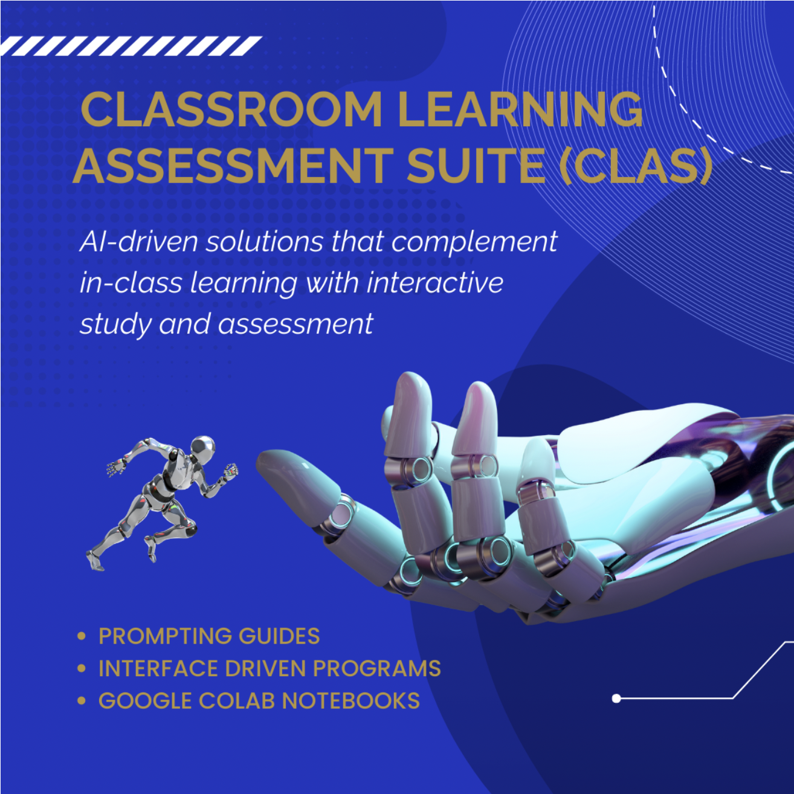
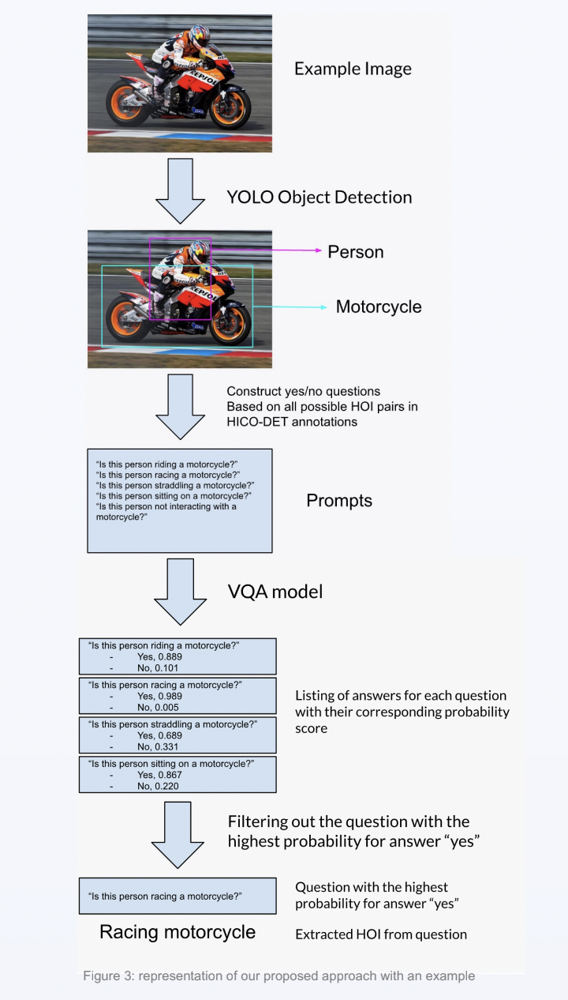
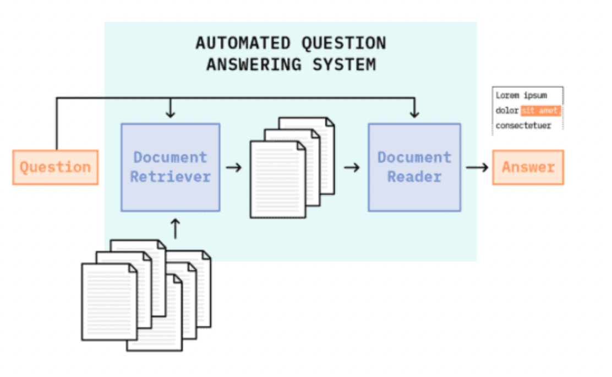

experience
Classroom Learning and Assessment Suite (CLAS) Project
Full Stack Developer | September 2023 - Present
- Build an AI-powered platform aimed at revolutionizing in-class learning and assessments.
- Developing interactive learning assessments, automating grading, and integrating an AI tutoring assistant using HuggingFace’s natural language processing libraries as well as OpenAI’s GPT-3 and GPT-4.
- Implement APIs to integrate various components of the system, such as the grading system and the learning management system for a web application and open source the repository.

Open Ended Learning Environments Lab
Machine Learning Researcher | May 2023 - Present
- Developed a visual question answering (VQA) model for action recognition with f-1 score of 0.82 to build an online teachable agent that analyzes students’ learning behaviors as they interact with collaborators.
- Optimized the performance of VQA models on 39152 train images from the Hico Det benchmark dataset.
- Employed object detection models, such as YOLO to identify a total of 80 possible objects within videos.
- Integrated natural language processing libraries such as NLTK to process text questions for VQA tasks.
- Leveraged pre-trained models, from Hugging Face’s Vilt library, for performing VQA tasks.

Law Transformers Project
Machine Learning Researcher | January 2023 - May 2023
- Developed a question answering pipeline for legal text analysis with f-1 score of 0.79 using Haystack.
- Implemented a retriever component using dense and sparse vector retrieval methods, including TF-IDF and Dense Passage Retrieval, to narrow down the search space in 180510 legal case documents.
- Employed transformer-based models, such as BERT, RoBERTa, and ALBERT, to build the reader component for accurate and context-aware answer extraction.
- Documented the implementation process, experiments, and results in Jupyter Notebooks, providing clear explanations and instructions for reproducibility.
